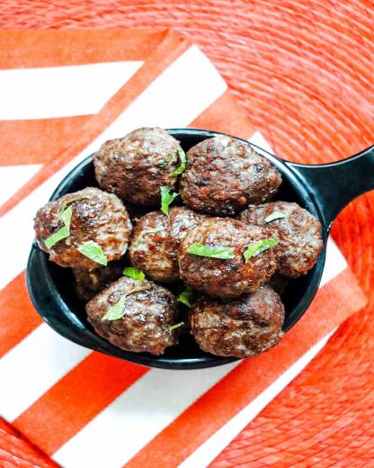

Turkish Meatballs (Köfte)

Turkish Meatballs known as köfte, are very delicious meal to put on the dinner table.
Spicy, textured and juicy
Ingredients
- 2 slices slightly stale whole wheat bread
- 1 pound lean ground lamb
- 1 egg
- 2 tablespoons chopped fresh parsley
- 2 cloves garlic
- 1 teaspoon ground cumin
- 1 teaspoon dried mint
- ½ teaspoon ground allspice
- ½ teaspoon salt
- ½ teaspoon ground black pepper
- 1 tablespoon olive oil